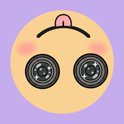

shortlogうまくいかないときは、まずここを見てください。
「今日」タブに並びます。過去の日は「思い出」タブのカレンダーから開けます。 写真アプリにも残す設定は、カメラ画面の設定から変えられます。
「今日」タブの書き出しから保存できます。 出来上がりは、画面で見えているとおりになります。
削除した動画はゴミ箱に入り、一定期間は元に戻せます。 「今日」タブのメニューから開いてください。
動画を選んで「顔を隠す」から設定できます。 顔の位置の計算は端末の中だけで行われ、映像は外へ出ません。
いいえ。shortlog はサーバーを持たず、記録は その iPhone の中だけにあります。 機種を変えるときは、iPhone のバックアップから復元してください。
アプリが保存した動画と設定はすべて消えます。 残したいものは、先に写真アプリへ保存してください。
下記までご連絡ください。次のことを書いていただけると助かります。